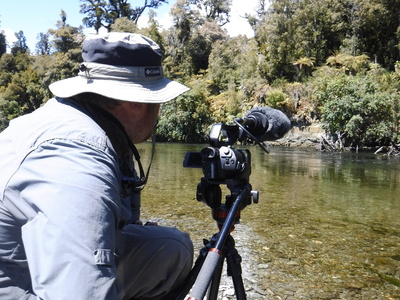
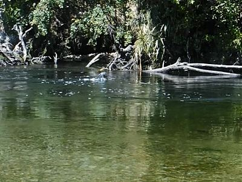
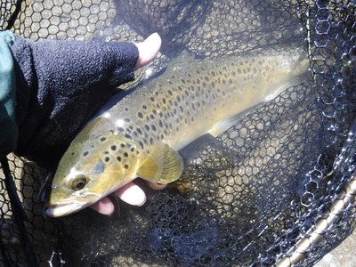
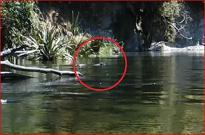
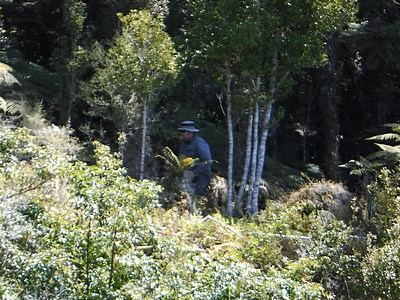

釣行日誌 ＮＺ編 「一期一会の旅：A Sentimental Journey」
ボイル、再び
11/25(SUN)-3
11時50分頃、いよいよあの淵に着いた。ディーンが先に立って静かに淵の前に陣取り、カメラのセッティングを始める。

正午になるのを待っていたかのように淵の頭でボイルが始まった。満潮となり、河口部から遡上して来たホワイトベイトがちょうどこの淵にさしかかったのであろう。昨日よりは散発的であったが、水面に炸裂する水しぶきから推測すると、それでも5，6尾の鱒が居るらしかった。

満足できるビデオが撮れたとディーンが言ったので、いよいよ今日もこの淵へキャストを始めた。昨日当たったブリントさん特製のホワイトベイトパターンを結び、Sの字にカーブして流れる淵の上流端に投射する。何度かキャストを繰り返し、淵の中ほどを引いてきた時にガツンとショックがあり、鱒が喰い付いた。あまり大きくは無いようなので余裕で寄せてくると、ディーンが楽々とランディングしてくれた。35cmほどのブラウンで、体色から見る限り川に居着きの鱒らしかった。

これだけ鱒が居る淵で、昨日は１尾も釣れなかったので、この魚はとても嬉しいキャッチだった。
その後、1時間ほど粘ってみたが、とうとう２尾目は釣れなかった。その淵の下流、昨日特大の水しぶきが上がっていた対岸の倒木下流の淀みを狙って遠投していると、静かな水面を割って大きな黒い物体が現れすぐに潜って消えた。
『？？？』
あれはいったい何だと見ていると、５ｍほど横で再び浮上し、また水中に入った。
「That is a seal!」

とディーンが教えてくれた。どうやら河口から１頭のアザラシが餌となる鱒を求めて遡上して来たらしい。見る間に数回の潜水と浮上を繰り返し、とうとうアザラシが１尾の大型ブラウンを咥え、あっという間に噛み砕いて飲み込んでしまった。
『へぇ～！ アザラシがここまで来るのか！』
１尾平らげた後も周辺を悠々と泳ぎ回って獲物を探していたが、５分ほどで下流へと姿を消した。しかし、そのあたり一帯は全てアザラシに荒らされておじゃんとなってしまった。
ホワイトベイトが海や川の微生物を食べ、それを鱒たちが狙い、さらにその鱒をアザラシが喰らう、という弱肉強食の野生生物の世界、命の連鎖がそこにあった。実に希有な１連のシーンを見ることが出来て僕はとても感動した。そして、ブリントさんやディーンが、シーランナーを狙うならこの時期に限る！ と勧めてくれたことに感謝した。
釣りに熱中し、思わぬハプニングもあってお昼が遅れ、午後１時半過ぎにランチとなった。今日もディーンがガスコンロでお湯を沸かし、コーヒーを淹れてくれた。おなじみになったサンドイッチの味が実にうまい。自分の分をペロリとたいらげ、クラッカーやオレンジをいただいた。
お昼も済んで片付けをしていると、ふとした拍子で携帯ガスコンロの容器の蓋が流れに落ち、ディーンが気付いた時にはプカプカと遙か下流まで浮いたまま流れてしまっていた。慌てて２人でジャブジャブと追いかけたが間に合わず、その蓋は下流の深い淵の脇に出来た淀みの回転流にとらわれ、ぐるぐると回っていた。とても渡れない深さなので、ディーンはいったん上流に戻り、渡れる水深の場所を見つけて対岸に移り、藪漕ぎをして蓋が浮いている淀みへ向かうことになった。僕はその場所に留まり、蓋の行方を彼に指示するように頼まれた。ディーンはあれよあれよという間に上流へと歩いて行き、ウェストハイのウェーダーギリギリの深さの瀬をなんとか渉り終え、急な河岸の崖をサルのごとくよじ登って原生林の中を突き進み、僕の正面までたどり着いた。
「まだ淵の淀みに浮いてるよぉ～！」
と、大声で崖の上に呼びかけると、ディーンは水面を見下ろし、蓋を見つけたらしく、今度はほとんど垂直の崖を猿のごとくへずり降りてなんとか蓋を回収した。

彼はすぐまた崖をよじ登り上流へと藪漕ぎで移動し、同じ場所を渡り終えて戻って来た。
「ああ、良かった。このコンロ、けっこうな値段なんだよな！」
安堵する彼の声を聞いて、こちらも安心した。
釣行日誌ＮＺ編 目次へ
サイトマップ
ホームへ
お問い合わせ